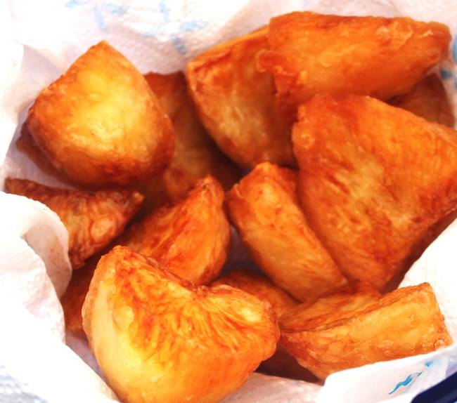

Roast Potatoes

The perfect accompaniment to a classic British roast dinner. While they pair well with any meat and gravy, these potatoes also stand on their own as a crunchy treat.
When cooked to perfection, these potatoes have a fluffy inside wrapped in a crispy outer layer, with a hint of salt.
Ingredients
- 1 kilogram of potatoes, preferably Maris Piper
- 100ml olive oil /100g duck or goose fat
- 2tsp flour
- Sea salt
Recipe
- Put a roasting tin in the oven (one big enough to take the potatoes in a single layer) and heat oven to 200C/fan 180C.
- Peel 1kg potatoes and cut each into 4 even-sized pieces if they are medium size, 2-3 if smaller (5cm pieces).
- Drop the potatoes into a large pan and pour in enough water to barely cover them.
- Add salt, then wait for the water to boil. As soon as the water reaches a full rolling boil, lower the heat, put your timer on and simmer the potatoes uncovered, reasonably vigorously, for 2 mins.
- Meanwhile, put the fat/olive oil into the hot roasting tin and heat it in the oven for a few minutes, so it's really hot.
- Drain the potatoes in a colander, then shake the colander back and forth a few times to fluff up the outsides.
- Sprinkle with 2 tsp flour and give another shake or two so they are evenly and thinly coated.
- Carefully put the potatoes into the hot fat - they will sizzle as they go in - then turn and roll them around so they are coated all over.
- Spread them in a single layer making sure they have plenty of room.
- Roast the potatoes for 15 mins, then take them out of the oven and turn them over.
- Roast for another 15 mins and turn them over again. Put them back in the oven for another 10-20 mins, or however long it takes to get them really golden and crisp. The colouring will be uneven, which is what you want.
- Scatter with the sea salt and serve straightaway.
Delicious.
Home